공조냉동기계기사(구) (2011-06-12 기출문제)
1과목: 기계열역학
1. 비열이 0.475 KJ/kg·K인 철 10kg을 20℃에서 80℃ 올리는데 필요한 열량은 몇 KJ인가?
- 222
- 232
- 285
- 315
(정답률: 77%)

2. 순수 물질이 기체-액체 평형상태(포화 상태)에 있다. 다음 설명 중 일반적으로 성립하지 않는 것은?
- 각 상의 온도가 같다.
- 각 상의 압력이 같다.
- 각 상의 비체적이 다르다.
- 각 상의 엔탈피가 같다.
(정답률: 62%)
3. 다음 중 이상기체의 교축(스로틀)과정에 대한 사항으로서 틀린 것은?
- 엔탈피 변화가 없다.
- 온도의 변화가 없다.
- 엔트로피의 변화가 없다.
- 비가역 단열과정이다.
(정답률: 47%)
4. 용기에 부착된 차압계로 읽은 압력이 150 kPa이고 기압계로 읽은 대기압이 100 kPa이다. 용기 안의 절대 압력은?
- 250 kPa
- 150 kPa
- 100 kPa
- 50 kPa
(정답률: 79%)
5. T-S선도에서 어느 가역 상태변화를 표시하는 곡선과 S축 사이의 면적은 무엇을 표시하는가?
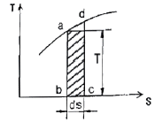
- 힘
- 열량
- 압력
- 비체적
(정답률: 83%)
6. 대형 Brayton 사이클 가스 터빈 동력 발전소의 압축기 입구에서 온도가 300K, 압력은 100kPa이고 압축기 압력비는 10:1이다. 공기의 비열은 1.004 kJ/kg·K, 비열비는 1.400 이다. 압축기 일은 약 얼마인가?
- 280.3 kJ/kg
- 299.7 kJ/kg
- 350.1 kJ/kg
- 370.5 kJ/kg
(정답률: 38%)
7. 0.5 MPa, 375℃의 수증기의 정압 비열(kJ/kg·K)은? (단, 0.5 MPa, 350℃에서 엔탈피 h=3167.7kJ/kg·K이고 0.5 MPa, 400℃에서 엔탈피 h=3271.9 kJ/kg·K이다. 수증기는 이상기체로 가정한다.)
- 1.042
- 2.084
- 4.168
- 8.742
(정답률: 47%)
8. -10℃와 30℃ 사이에서 작동되는 냉동기의 최대 성능계수로 적합한 것은?
- 8.8
- 6.6
- 3.3
- 13.2
(정답률: 78%)
9. 어떤 냉동사이클의 T-s 선도에 대한 설명으로 틀린것은?
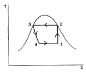
- 1-2 과정 : 가역단열압축
- 2-3 과정 : 등온흡열
- 3-4 과정 : 교축과정
- 4-1 과정 : 증발기에서 과정
(정답률: 71%)
10. 압력이 일정할 때 공기 5 kg을 0℃에서 100℃까지 가열 하는데 필요한 열량은 약 몇 kJ 인가?(단, 공기비열 Cp(kJ/kg·℃) = 1.01+0.000079t(℃) 이다.)
- 102
- 476
- 490
- 507
(정답률: 74%)
11. 브레이턴 사이클(Brayton Cycle)은 다음 무슨 사이클에 가장 가까운가?
- 정적연소사이클
- 정압연소사이클
- 등온연소사이클
- 합성연소사이클
(정답률: 56%)
12. 열역학 제2법칙은 여러 가지로 서술될 수 있다. 열역학 제2법칙에 대한 설명 중 잘못된 것은?
- 열을 일로 변환하는 것은 불가능하다.
- 열효율이 100%인 열기관을 만들 수 없다.
- 열은 저온 물체로부터 고온 물체로 자연적으로 전달되지 않는다.
- 입력되는 일 없이 작동하는 냉동기를 만들 수 없다.
(정답률: 62%)
13. 어떤 기체가 5 kJ의 열을 받고 0.18 kN·m의 일을 하였다. 이때의 내부에너지의 변화량은?
- 3.24 kJ
- 4.82 kJ
- 5.18 kJ
- 6.14 kJ
(정답률: 72%)
14. 피스톤-실린더로 구성된 용기 안에 들어 있는 100kPa, 20℃ 상태의 질소 기체를 가역 단열압축하여 압력이 500 kPa 이 되었다. 질소의 정적 비열은 0.745kJ/kg·K 이고, 비열비는 1.4 이다. 질소 1 kg당 필요한 압축일은 약 얼마인가?
- 102.7 kJ/kg
- 127.5 kJ/kg
- 171.8 kJ/kg
- 240.5 kJ/kg
(정답률: 47%)
15. 공기가 등온과정을 통해 압력이 200kPa, 비체적이 0.02m3/kg인 상태에서 압력이 100kPa인 상태로 팽창하였다. 공기를 이상기체로 가정할 때 시스템이 이 과정에서 한 단위 질량 당 일은 얼마인가?
- 1.4 kJ/kg
- 2.0 kJ/kg
- 2.8 kJ/kg
- 8.0 kJ/kg
(정답률: 44%)
16. 폴리트로픽 변화의 관계식 "PVn = 일정"에 있어서 n이 무한대로 되면 어느 과정이 되는가?
- 정압과정
- 등온과정
- 정적과정
- 단열과정
(정답률: 72%)
17. 10℃에서 160℃까지의 공기의 평균 정적비열은 0.7315 kJ/kg℃이다. 이 온도변화에서 공기 1kg의 내부에너지 변화는?
- 109.7 kJ
- 120.6 kJ
- 107.1 kJ
- 121.7 kJ
(정답률: 68%)
18. 용기 안에 있는 유체의 초기 내부에너지는 700 kJ이다. 냉각과정 동안 250 kJ의 열을 잃고, 용기 내에 설치된 회전날개로 유체에 100kJ의 일을 한다. 최종상태의 유체의 내부에너지는 얼마인가?
- 350 kJ
- 450 kJ
- 550 kJ
- 650 kJ
(정답률: 58%)
19. 다음 중 냉동기의 성능계수를 높이는 것으로 틀린것은?
- 증발기의 온도를 높인다.
- 증발기의 온도를 낮춘다.
- 압축기의 효율을 높인다.
- 증발기와 응축기에서 마찰압력손실을 줄인다.
(정답률: 69%)
20. 압축비가 7.5 이고, 비열비 k = 1.4 인 오토(Otto)사이클의 열효율은?
- 48.7%
- 51.2%
- 55.3%
- 57.6%
(정답률: 75%)
2과목: 냉동공학
21. 흡수식냉동기에 적용하는 원리 중 잘못된 것은?
- 대기압의 물은 100℃에서 증발하지만, 높은 산과 같이 대기압이 1기압 이하인 곳은 100℃이하 에서 증발한다.
- 냉매가 물일 때에는 흡수제로서 LiBr(리튬브로마이드)를 사용한다.
- 흡수식 냉동기에서 물이 증발 할 때에는 주위에서 기화열을 빼앗고 열을 빼앗기는 쪽은 냉각되게 된다.
- 흡수식 냉동기는 증발기, 흡수기, 재생기, 응축기, 압축기, 열교환기로 구성되어 있다.
(정답률: 78%)
22. 냉동실의 온도를 -10℃로 유지하기 위하여 매시 100000kcal의 열량을 제거해야한다. 이 제거열량을 냉동기로 제거한다면 이 냉동기의 소요마력은 약 얼마인가? (단, 냉동기의 방열온도는 15℃, 1HP =632kcal/h로 한다.)
- 17.5 HP
- 16.2 HP
- 15.1 HP
- 13.1 HP
(정답률: 61%)
23. 냉매 배관 내에 플래시가스(flash gas)가 발생했을 때 운전상태가 아닌 것은?
- 팽창밸브의 능력 부족현상
- 냉매부족과 같은 현상
- 팽창밸브 직전의 액 냉매의 온도상승 현상
- 액관 중의 기포 발생
(정답률: 52%)
24. 냉동기 중 공급 에너지원이 동일한 것끼리 이루어진 것은?
- 흡수 냉동기, 기체 냉동기
- 증기분사 냉동기, 증기압축 냉동기
- 기체 냉동기, 증기분사 냉동기
- 증기분사 냉동기, 흡수 냉동기
(정답률: 80%)
25. 냉동장치의 윤활 목적에 해당되지 않는 것은?
- 마모장치
- 부식방지
- 냉매 누설방지
- 동력손실 증대
(정답률: 81%)
26. 히트펌프 사이클의 냉매 엔탈피 값이 다음과 같을 때 이 히트펌프 장치의 가열능력이 30kW였다. 이 히트펌프 장치의 실제 냉동능력은 몇 kW 인가?(단, 압축기의 흡입증기 엔탈피 h1 = 148 kcal/kg, 압축기 실제 토출가스 엔탈피 h2 = 160 kcal/kg, 팽창밸브 직전 냉매액 엔탈피 h3 = 110 kcal/kg이다.)
- 12.8
- 22.8
- 32.4
- 39.5
(정답률: 51%)
27. 왕복 압축기에 관한 설명 중 맞는 것은?
- 압축기의 압축비가 증가하면 일반적으로 압축 효율은 증가하고 체적효율은 낮아진다.
- 고속다기통 압축기의 용량제어에 언로우드를 사용하는 이점은 입형저속에 비해 압축기의 능력을 무 단계로 제어가 가능하기 때문이다.
- 고속다기통 압축기의 밸브는 일반적으로 링 모양의 플레이트 밸브가 사용되고 있다.
- 2단 압축 냉동장치에서 저단측과 고단측의 실제 피스톤 토출량은 일반적으로 같다.
(정답률: 60%)
28. 물을 냉매로 사용할 수 있는 냉동기로 맞는 것은?
- 흡수식 냉동기
- 증기 압축식 냉동기
- 열전 냉동기
- 공기 압축식 냉동기
(정답률: 83%)
29. 동결속도에 따라 동결방법을 구분하면 급속 동결과 완만동결로 구분할 수 있는데, 급속 동결일 때 최대 빙결정 생성대를 통과하는 시간으로 적당한 것은?
- 25~35시간
- 25~35분
- 1~2시간
- 1~2일
(정답률: 64%)
30. 증발관의 길이가 너무 길거나, 관 길이에 대하여 부하가 과대한 경우 증발관 내의 압력 강하가 커져서 과열도가 설정치가 되어도 밸브가 열리지 않게 되며 냉동능력이 감소하여 과열을 증가시킨다. 이 현상을 방지하기 위하여 사용되는 밸브는 무엇인가?
- 내부 균압형 자동 팽창밸브
- 외부 균압형 자동 팽창밸브
- 액면 제어용 감온자동 팽창밸브
- 부자식 자동 팽창밸브
(정답률: 55%)
31. 두께가 0.15m인 두꺼운 평판의 한 면은 T0=500K로, 다른 면은 T1 = 280K로 유지될 때 단위 면적당의 평판을 통한 열전달량(kcal/hm2)은 얼마인가?(단, 열전도율은 온도에 따라 λ(T) = λ0(1 + βT)로 주어지며, λ0 = 0.030kcal/mh℃, β = 3.6 × 10-3 K-1이다.)(오류 신고가 접수된 문제입니다. 반드시 정답과 해설을 확인하시기 바랍니다.)
- 100.3
- 1⑤.6
- 110.9
- 120.8
(정답률: 44%)
32. 냉동 부하가 일정할 때 계절의 변화에 따라 응축 능력의 변동이 가장 심한 응축기는 어는 것인가?
- 증발식 응축기
- 대기식 응축기
- 2중관식 응축기
- 공냉식 응축기
(정답률: 60%)
33. 냉매배관 중 액분리기에서 분리된 냉매의 처리방법으로 틀린 것은?
- 증발기로 재순환 시키는 방법
- 가열시켜 액을 증발시키고 압축기로 회수하는 방법
- 고압 측 수액기로 회수하는 방법
- 응축기로 순환시키는 방법
(정답률: 66%)
34. 다음 그림은 냉동사이클을 압력-엔탈피(P-h) 선도에 나타낸 것이다. 올바르게 설명된 것은?
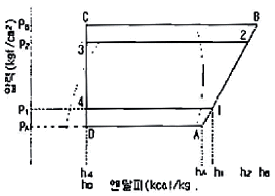
- 냉동사이클이 1-2-3-4-1에서 1-B-C-4-1로 변하는 경우 냉매 1kg당 압축일의 증가는 (hB-h1)이다.
- 냉동사이클이 1-2-3-4-1에서 1-B-C-4-1로 변하는 경우 성적계수는 [(h1-h4)/(h2-h1)]에서 [(h1-h4)/(hB-h1)]로 된다.
- 냉동사이클이 1-2-3-4-1에서 A-2-3-D-A로 변하는 경우 증발압력이 P1에서 PA로 낮아져 압축비는 (P2/P1)에서 (P1/PA)로 된다.
- 냉동사이클이 1-2-3-4-1에서 A-2-3-D-A로 변하는 경우 냉동효과는 (h1-h4)에서 (hA-h4)로 감소하지만, 압축기 흡입증기의 비체적은 변하지 않는다.
(정답률: 67%)
35. 동일한 냉동실 온도조건으로 냉동설비를 할 경우 브라인식과 비교한 직접 팽창식의 설명으로 옳지 않은 것은?
- 냉매의 증발온도가 낮다.
- 냉매 소비량(충전량)이 많다.
- 소요동력이 적다.
- 설비가 간단하다.
(정답률: 35%)
36. 냉동용 압축기를 냉동법의 원리에 의해 분류할 때, 저온에서 증발한 가스를 압축기로 압축하여 고온으로 이동시키는 냉동법은 어느 것인가?
- 화학식 냉동법
- 기계식 냉동법
- 흡착식 냉동법
- 전자식 냉동법
(정답률: 72%)
37. 회전식 압축기에 대한 설명으로 틀린 것은?
- 소형으로 설치면적이 작다.
- 진동과 소음이 적다.
- 용량제어를 자유롭게 할 수 있다.
- 흡입밸브가 없다.
(정답률: 35%)
38. 다음 냉매 중 비등점이 가장 낮은 것은?
- R -717
- R - 14
- R - 500
- R - 502
(정답률: 44%)
39. 수축열 방식의 축열재 구비조건으로 잘못된 것은?
- 단위체적당 축열량이 적을 것
- 가격이 저렴할 것
- 화학적으로 안정할 것
- 열의 출입이 용이할 것
(정답률: 59%)
40. 모세관의 압력강하가 가장 큰 경우는?
- 직경이 가늘고 길수록
- 직경이 가늘고 짧을수록
- 직경이 굵고 짧을수록
- 직경이 굵고 길수록
(정답률: 79%)
3과목: 공기조화
41. 풍량 Q(m3/h), 팬의전압 PT(mmAq), 팬의정압 PS(mmAq), 토출풍속 VD(m/s), 전압효율 ηT, 정압효율 ηs라 할 때 송풍기의 소요동력을 계산하는 식은?
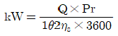
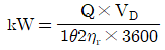
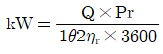
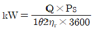
(정답률: 51%)
42. 환기방식에 관한 설명 중 옳은 것은?
- 제1종 환기는 자연급기와 자연배기 방식이다.
- 제2종 환기는 기계설비에 의한 급기와 자연배기 방식이다.
- 제3종 환기는 기계설비에 의한 급기와 기계설비에 의한 배기방식이다.
- 제4종 환기는 자연급기와 기계설비에 의한 배기 방식이다.
(정답률: 79%)
43. 열펌프에 대한 설명 중 옳은 것은?
- 열펌프의 펌프를 가동하여 열을 내는 기관이다.
- 난방용의 보일러를 냉방에 사용할 때 이를 열펌프라 한다.
- 열펌프는 증발기에서 내는 열을 이용한다.
- 열펌프는 응축기에서의 방열을 난방으로 이용하는 것이다.
(정답률: 74%)
44. 공조부하 중 재열부하의 설명이 옳지 않은 것은?
- 현열 및 잠열부하에 속한다.
- 냉방부하에 속한다.
- 냉각코일의 용량산출 시 포함시킨다.
- 냉각된 공기를 가열하는데 소요되는 열량이다.
(정답률: 66%)
45. 공기조화 분류에 대한 설명으로 맞지 않는 것은?
- 공기조화는 대상에 따라 보건용 공조와 산업용 공조로 분류된다.
- 보건용 공조에는 사무실, 오락실, 전산실, 측정실 등이 해당된다.
- 산업용 공조에는 창고, 공장 등이 해당된다.
- 보건용 공조는 실내 거주자의 쾌적성을 목적으로 한다.
(정답률: 81%)
46. 덕트의 배치 방식에 관한 설명 중 틀린 것은?
- 간선덕트 방식은 주 덕트인 입상덕트로 부터 각 층에서 분기되어 각 취출구로 취출관을 연결한다.
- 개별덕트 방식은 주 덕트에서 각개의 취출구로 각개의 덕트를 통해 분산하여 송풍하는 방식으로 각 실의 개별 제어성의 우수하다.
- 환상덕트 방식은 2개의 덕트 말단을 루프(loop) 상태로 연결함으로써 덕트 말단에 가까운 취출구에서 송풍량의 언밸런스가 발생될 수 있다.
- 각개 입상 덕트 방식은 호텔, 오피스빌딩 등 공기·수방식인 덕트병용 팬코일 유닛방식이나 유인 유닛방식 등에 사용된다.
(정답률: 69%)
47. 습구온도에 대한 설명 중 옳은 것은?
- 감열부에 습한 공기를 불어 넣어 측정한 온도이다.
- 습구온도는 주위의 공기가 포화증기에 가까우면 건구온도와의 차는 작아지고, 건조하게 되면 그 차는 커진다.
- 습구온도계의 감열부는 기류속도 3m/s 이상의 장소에 설치하는 것이 좋다.
- 기류가 거의 없는 곳에서는 아스만통풍 건습계, 일정 풍속을 강제적으로 공급하여 측정하는 경우는 오거스트 건습계가 사용된다.
(정답률: 66%)
48. 태양으로부터의 일사량이 480kcal/m2h이고, 유리면의 차폐계수가 0.75일 때 유리의 전열면적, 10m2을 통해 실내로 침입하는 열부하량은 얼마인가?
- 2400kcal/h
- 3600kcal/h
- 4800kcal/h
- 6400kcal/h
(정답률: 77%)
49. 복사패널의 시공법에 관한 설명으로 잘못된 것은?
- 코일의 직선 길이부가 방의 짧은 변 쪽에 위치하도록 코일을 배열한다.
- 콘크리트의 양생은 30℃ 이상의 온도에서 24시간 이상 건조 시킨다.
- 코일의 길이는 50m 이내가 좋다.
- 코일 위의 모르타르 두께는 코일 외경의 1.5배 정도로 한다.
(정답률: 75%)
50. 환수주관을 보일러 수면보다 높은 위치에 배관하는 환수배관방식은?
- 습식 환수방법
- 강제 환수방식
- 건식 환수방식
- 중력 환수방식
(정답률: 79%)
51. 냉수 코일설계 기준을 설명한 것 중 옳지 않은 것은?
- 코일의 설치는 관의 수평으로 놓이게 한다.
- 수속(水速)의 기준 설계 값은 1m/s 전후이다.
- 공기 냉각용 코일의 열 수는 4~8열이 많이 사용된다.
- 냉수 입ㆍ출구 온도차는 10℃ 이상으로 한다.
(정답률: 73%)
52. 다음 중 전공기방식의 특징이 아닌 것은?
- 송풍량이 충분하여 실내오염이 적다.
- 환기용 팬(Fan)을 설치하면 외기냉방이 가능하다.
- 실내에 노출되는 기기가 없어 마감이 깨끗하다.
- 천장의 여유공간이 적을 때 적합하다.
(정답률: 78%)
53. 외기냉방에 대한 설명으로 적당하지 않은 것은?
- 외기온도가 실내공기온도 이하로 되는 때에 적용한다.
- 냉동기를 가동하지 않아도 냉방을 할 수 있다.
- 외기온도가 실내공기온도보다 높을 때에는 외기만을 급기한다.
- 급기용 및 환기용 송풍기를 설치한다.
(정답률: 77%)
54. 500rpm으로 운전되는 송풍기가 풍량 300m3/min, 전압 40mmAq, 동력 3.5kW의 성능을 나타내고 있다. 회전수를 550rpm으로 상승시키면 동력은 약 몇 kW가 소요되는가?(단, 송풍기 효율은 변화되지 않는 것으로 가정한다.)
- 3.5kW
- 4.7kW
- 5.5kW
- 6.0kW
(정답률: 52%)
55. 냉풍 및 온풍을 각 실에서 자동적으로 혼합하여 공급하는 송풍방식은?
- 복사 냉난방 방식
- 유인 유니트 방식
- 팬코일 유니트 방식
- 2중 덕트 방식
(정답률: 75%)
56. 취출에 관한 용어 설명 중 옳은 것은?
- 내부유인이란 취출구의 내부에 실내 공기를 흡입해서 이것과 취출 1차공기를 혼합해서 취출하는 작용이다.
- 강하도란 수평으로 취출된 공기가 어느 거리만큼 진행했을 때의 기류 중심선과 취출구 중심과의 수평거리이다.
- 2차공기란 취출구로부터 취출되는 공기를 말한다.
- 도달거리란 수평으로 취출된 공기가 어느 거리만큼 진행했을 때의 기류 중심선과 취출구와의 수직거리이다.
(정답률: 48%)
57. 방직공장의 정방실에서 20kW의 전동기로서 구동되는 정방기가 10대 있을 때, 전력에 의하는 취득열량은 얼마인가? (단, 소요동력/정격동력 φ = 0.85, 가동률 φ = 0.9, 전동기 효율은 0.9이다.)
- 156200 kcal/h
- 146200 kcal/h
- 166200 kcal/h
- 176200 kcal//h
(정답률: 58%)
58. 증기 사용압력이 가장 낮은 보일러는?
- 노통 연관 보일러
- 수관 보일러
- 관류 보일러
- 입형 보일러
(정답률: 59%)
59. 보일러의 부속설비로서 연소실에서 연돌에 이르기까지 배치되는 순서로 맞는 것은?
- 과열기 → 절탄기 → 공기예열기
- 절탄기 → 과열기 → 공기예열기
- 과열기 → 공기예열기 → 절탄기
- 공기예열기 → 절탄기 → 과열기
(정답률: 60%)
60. 습공기의 상태변화에 관한 설명 중 옳지 않은 것은?
- 습공기를 가열하면 엔탈피가 증가한다.
- 습공기를 가열하면 상대습도는 감소한다.
- 습공기를 냉각하면 비체적은 감소한다.
- 습공기를 냉각하면 절대습도는 증가한다.
(정답률: 71%)
4과목: 전기제어공학
61. 단상변압기의 2차측 110V 단자에 0.4[Ω]의 저항을 접속하고 1차측 단자에 720V를 가했을 때 1차전류가 2A이었다. 이때 1차측 탭 전압은? (단, 변압기의 임피던스와 손실은 무시한다.)
- 3100[V]
- 3150[V]
- 3300[V]
- 3450[V]
(정답률: 41%)
62. 100V, 40W의 전구에는 0.4A의 전류가 흐른다면 이 전구의 저항은?
- 100[Ω]
- 150[Ω]
- 200[Ω]
- 250[Ω]
(정답률: 73%)
63. 다음 중 자성체가 아닌 것은?
- 니켈
- 백금
- 산소
- 나무
(정답률: 76%)
64. 그림과 같은 Y결선회로에서 X에 걸리는 전압은?
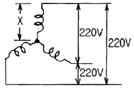
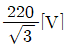
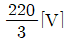
- 110[V]
- 220[V]
(정답률: 73%)
65. 다음 중 불연속 제어계는?
- ON-OFF 제어
- 비례 제어
- 미분 제어
- 적분 제어
(정답률: 79%)
66. 그림과 같은 피드백 회로의 종합 전달함수는?
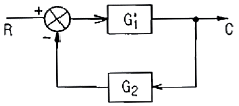
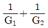
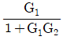
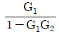
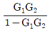
(정답률: 65%)
67. 온도, 유량, 압력 등 공정제어의 제어량으로 하는 제어로 일반적으로 응답속도가 늦은 제어계는?
- 비율제어
- 프로그램제어
- 정치제어
- 프로세스제어
(정답률: 69%)
68. 시퀀스회로에서 a 접점에 대한 설명으로 옳은 것은?
- 수동으로 리셋트 할 수 있는 접점이다.
- 누름버튼스위치의 접점이 붙어있는 상태를 말한다.
- 두 접점이 상호 인터록이 되는 접점을 말한다.
- 전원을 투입하지 않았을 때 떨어져 있는 접점이다.
(정답률: 71%)
69. 유도전동기에서 슬립이 "0" 이란 의미와 같은 것은?
- 유도전동기가 동기속도로 회전한다.
- 유도전동기가 전부하 운전상태이다.
- 유도전동기가 정지상태이다.
- 유도제동기의 역할을 한다.
(정답률: 74%)
70. 그림과 같은 릴레이 시퀀스 제어회로를 불 대수를 사용하여 간단히 하면?
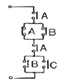
- AB
- A+B
- A+C
- B+C
(정답률: 50%)
71. 다음 회로에서 부하 RL에 전달되는 최대전력은?
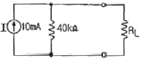
- 1[W]
- 2[W]
- 3[W]
- 4[W]
(정답률: 35%)
72. 직류 전동기에 관한 사항으로 틀린 것은?(단, N은 회전속도, Φ는 지속, Ia는 전기자 전류, Ra는 전기자 저항, R은 전동기 저항, ω는 회전각속도, K는 상수이다.)
- 역기전력 : E=KㆍøㆍN[V]
- 회전속도 :

- 토크 :

- 기계적 출력 : P=9.8ωR2[w]
(정답률: 51%)
73. 최대눈금이 100[V]인 직류전압계가 있다. 이 전압계를 사용하여 150[V]의 전압을 측정하려면 배율기의 저항은?(단, 전압계의 내부저항은 5000[Ω]이다.)
- 1000[Ω]
- 2500[Ω]
- 5000[Ω]
- 10000[Ω]
(정답률: 58%)
74. 유도전동기를 유도발전기로 동작시켜 그 발생 전력을 전원으로 반환하여 제동하는 유도전동기 제동방식은?
- 발전제동
- 역상제동
- 단상제동
- 회생제동
(정답률: 64%)
75. 공작기계의 물품 가공을 위하여 주로 펄스를 이용한 프로그램제어를 하는 것은?
- 수치제어
- 속도제어
- PLC제어
- 계산기 제어
(정답률: 64%)
76. 목표값을 직접 사용하기 곤란할 때 어떤 것을 이용하여 주 되먹임 요소와 비교하여 사용하는가?
- 기준입력요소
- 제어요소
- 되먹임요소
- 비교장치
(정답률: 61%)
77. 다음 중 추치제어에 속하는 제어계는?
- 자동전압조정제어
- SCR 전원장치제어
- 발전소의 주파수제어
- 미사일 유도제어
(정답률: 70%)
78. 전류에 의해서 발생 되는 작용이라고 볼 수 없는 것은?
- 발열 작용
- 자기차폐 작용
- 화학 작용
- 자기 작용
(정답률: 60%)
79. 서보전동기(Servo motor)는 다음의 제어기기 중 어디에 속하는가?
- 증폭기
- 조작기기
- 변환기
- 검출기
(정답률: 62%)
80. 자동제어계에서 제어요소는 무엇으로 구성되는가?(오류 신고가 접수된 문제입니다. 반드시 정답과 해설을 확인하시기 바랍니다.)
- 검출부와 제어대상
- 검출부와 조절부
- 검출부와 조작부
- 조작부와 조절부
(정답률: 19%)
5과목: 배관일반
81. 환수관의 누설로 인해 보일러가 안전수위 이하의 상태에서 연소되는 것을 방지할 수 있는 배관법은?
- 리프트 이음
- 하트포드 이음
- 바이패스 이음
- 스위블 이음
(정답률: 74%)
82. 원심력 철근콘크리트관에 대한 설명으로 옳지 않은 것은?
- 흄(hume)관이라고 한다.
- 보통압관과 압력관 2종류가 있다.
- A형 이음재 형상은 칼라이음쇠를 말한다.
- B형 이음재 형상은 삽입이음쇠를 말한다.
(정답률: 54%)
83. 냉ㆍ온수 배관법 중 역환수 (reverse return)방식에 대한 특징이 아닌 것은?
- 유량 밸런스를 잡기 어렵다.
- 배관 스페이스가 많이 필요하다.
- 배관계의 마찰저항이 거의 균등해진다.
- 공급관과 환수관의 길이를 거의 같게 하는 배관방식이다.
(정답률: 62%)
84. 급수에 사용되는 물은 탄산칼슘의 함유랑에 따라 연수와 경수로 구분된다. 경수사용 시 발생될 수 있는 현상으로 틀린 것은?
- 비누거품의 발생이 좋다.
- 보일러용수로 사용 시 내면에 관석(스케일)이 발생한다.
- 전열효율이 저하하고 과열의 원인이 된다.
- 보일러의 수명이 단축된다.
(정답률: 86%)
85. 급탕온도를 85℃(밀도 0.96876kg/L), 복귀탕의 온도 70℃(밀도 0.97781kg/L)로 할 때 자연 순환수두는 얼마인가?(단, 가열기에서 최고위 급탕 전까지의 높이는 10m로 한다.)
- 70.5mmAq
- 80.5mmAq
- 90.5mmAq
- 100.5mmAq
(정답률: 51%)
86. 다음 중 무기질 보온재가 아닌 것은?
- 유리면
- 양면
- 규조토
- 코르크
(정답률: 68%)
87. 관의 종류와 이음방법 연결이 잘못된 것은?
- 강관 - 나사이음
- 동관 - 압축이음
- 주철관 - 칼라이음
- 스테인리스강관 - 몰코이음
(정답률: 64%)
88. 물의 정화방법에서 침전방법에 따라 일어나는 반응 중에 황산반토를 물에 혼합하면 생성되는 응집성이 풍부한 플록(flock)형상의 물질로 맞는 것은?
- 3Ca(HCO3)2
- CO2
- Al(OH)3
- CaSO4
(정답률: 49%)
89. 우수배관 시공 시 고려할 사항으로 틀린 것은?
- 우수배관은 온도에 따른 관의 신축에 대응하기 위해 오프셋 부분을 둔다.
- 우수 수직관은 건물 내부에 배관하는 경우와 건물 외벽에 배관하는 경우가 있다.
- 우수 수직관은 다른 기구의 배수관과 접속시켜 통기관으로 사용할 수 있다.
- 우수 수평관을 다른 배수관과 접속할 때에는 우수 배수관을 통해 하수가스가 발생되지 않도록 U자 트랩을 설치한다.
(정답률: 59%)
90. 그림과 같은 룸쿨러의 (A),(B),(C)에 설치하는 장치는?
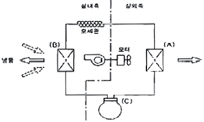
- (A)응축기 (B)증발기 (C)압축기
- (A)증발기 (B)압축기 (C)응축기
- (A)압축기 (B)응축기 (C)증발기
- (A)증발기 (B)응축기 (C)압축기
(정답률: 65%)
91. 아래의 저압가스 배관의 직경을 구하는 식에서 S가 의미하는 것은?
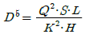
- 관의 내경
- 공급 압력차
- 배관의 길이
- 가스 비중
(정답률: 78%)
92. 냉매배관 시공 시 주의사항으로 틀린 것은?
- 배관 길이는 되도록 짧게 한다.
- 온도변화에 의한 신축을 고려한다.
- 곡률 반지름은 가능한 한 작게 한다.
- 수평배관은 냉매흐름방향으로 하향구배로 한다.
(정답률: 81%)
93. 도시가스 제조소 및 공급소 밖의 배관설치 기준으로 틀린 것은?
- 배관은 환기가 잘되거나 기계환기설비를 설치한 장소에 설치할 것
- 배관의 이음매(용접이음매는 제외)와 전기계량기 및 전기개폐기와의 거리는 60cm이상의 거리를 유지할 것
- 배관을 철도부지에 매설하는 경우에는 지표면으로부터 배관의 외면까지의 깊이를 1.2m이상 유지한다.
- 입상관의 밸브는 바닥으로부터 1.0m이상 2.5m이내에 설치할 것
(정답률: 49%)
94. 공기조화설비 배관 시 지켜야 할 사항으로 틀린것은?
- 배관이 보, 천장, 바닥을 관통하는 개소에는 슬리브를 삽입하여 배관한다.
- 수평주관은 공기 체류부가 생기지 않도록 배관한다.
- 재관은 모두 관의 신축을 고려하여 시공한다.
- 주관의 굽힘부는 벤드(곡관) 대신 엘보를 사용한다.
(정답률: 76%)
95. 스트레이너의 형상에 따른 종류가 아닌 것은?
- Y형
- S형
- U형
- V형
(정답률: 68%)
96. 온수난방 배관시공 시 기울기에 관한 설명 중 틀린 것은?
- 배관의 기울기는 일반적으로 1/250 이상으로 한다.
- 단관 중력 순환식의 온수 주관은 하향기울기를 준다.
- 복관 중력 순환식의 상향 공급식에서는 공급관, 복귀관 모두 하향기울기를 준다.
- 강제 순환식은 상향기울기나 하향기울기 어느 쪽이든 자유로이 할 수 있다.
(정답률: 56%)
97. 경질 염화비닐관의 설명으로 틀린 것은?
- 열팽창률이 크다.
- 관내 마찰손실이 적다.
- 산, 알칼리 등에 대해 내식성이 적다.
- 고온 또는 저온의 장소에 부적당하다.
(정답률: 64%)
98. 배수설비에서 통기관을 사용하는 가장 중요한 목적은?
- 유해가스 제거를 위하여
- 트랩의 봉수를 보호하기 위하여
- 급수의 역류를 방지하기 위하여
- 공기의 흐름을 방지하기 위하여
(정답률: 74%)
99. 열팽창에 의한 배관의 이동을 구속 또는 제한하기 위해 사용되는 관 지지장치는 무엇인가?
- 행거(hanger)
- 서포트(support)
- 브레이스(brace)
- 레스트레인트(restraint)
(정답률: 65%)
100. 배관에서 금속의 산화부식 방지법 중 칼로라이징(calorizing)법이라?
- 크롬(Cr)을 분말상태로 배관외부에 가열하여 침투시키는 방법
- 규소(Si)를 분말상태로 배관외부에 가열하여 침투시키는 방법
- 알루미늄(Al)을 분말상태로 배관외부에 침투시키는 방법
- 구리(Cu)를 분말상태로 배관외부에 침투시키는 방법
(정답률: 71%)
= 10kg × 0.475 KJ/kg·K × (80℃ - 20℃)
= 10kg × 0.475 KJ/kg·K × 60℃
= 285 KJ
따라서 정답은 "285"이다.